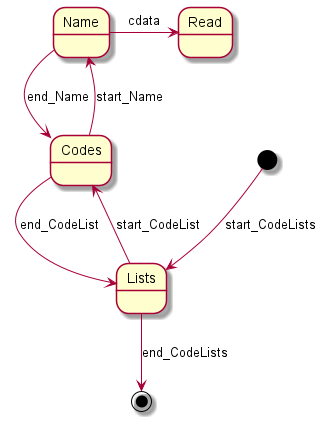
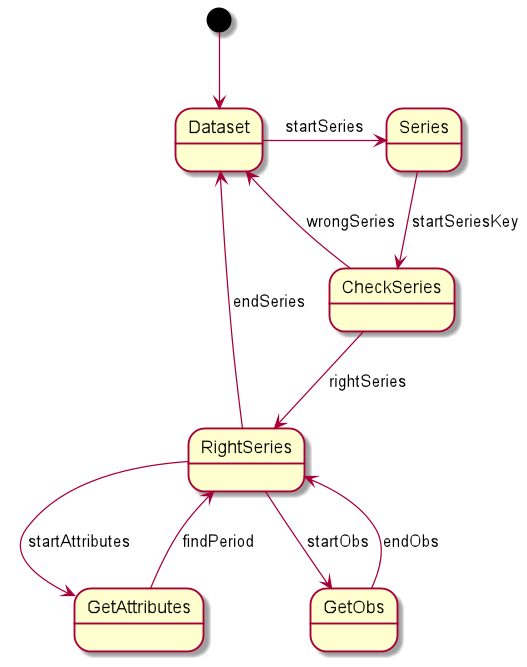

<!doctype html>
<html>
	<head>
		<meta charset="utf-8">
		<meta name="viewport" content="width=device-width, initial-scale=1.0, maximum-scale=1.0, user-scalable=no">

		<title>Технология StAX</title>

		<link rel="stylesheet" href="dist/reset.css">
		<link rel="stylesheet" href="dist/reveal.css">
		<link rel="stylesheet" href="dist/theme/beige.css" id="theme">
		<link rel="stylesheet" href="plugin/highlight/github.css">
	</head>
	<body>
		<div class="reveal">
			<div class="slides">
                <section data-markdown data-separator="^\n---\n$" data-separator-vertical="^\n--\n$">
                    <script type="text/template">
### Обзор XML парсеров

- XPath
- JAXB (Java Architecture for XML Binding, DOM – Document Object Model)
- StAX (Streaming API for XML, SAX – Simple API for XML)

--

### StAX reader

```Kotlin
fun reader() = XMLInputFactory
	.newInstance()
	.createXMLStreamReader(
		Reader::class.java.getResourceAsStream("data_part.xml")
	)
```

--

### Поиск тэга

```Kotlin
private val reader = reader()
while (reader.hasNext())
	when (reader.next()){
		XMLStreamReader.START_ELEMENT ->
			if (reader.localName == "CodeLists")
				readLists()
		XMLStreamReader.END_ELEMENT ->
			if (reader.localName == "CodeLists")
				break
	}
```

--

### Поиск вложенного тэга

```Kotlin
private fun readLists() {
    while (reader.hasNext())
        when (reader.next()) {
            XMLStreamReader.START_ELEMENT ->
                if (reader.localName == "CodeList")
                    readList()
            XMLStreamReader.END_ELEMENT ->
                if (reader.localName == "CodeLists")
                    return
        }
}
```

--

### Выборка XML элемента

```Kotlin
private fun readList() {
    while (reader.hasNext())
        when (reader.next()) {
            XMLStreamReader.START_ELEMENT ->
                if (reader.localName == "Name")
                    result += reader.elementText + "\n"
            XMLStreamReader.END_ELEMENT ->
                if (reader.localName == "CodeList")
                    return
        }
}
```

---

### Усложненный пример StAX

```Kotlin
class Point(
    var year: Int = 0,
    var period: String = "",
    var value: Float = 0f
){
    override fun toString(): String =
        "$year $period: $value\n"
}
private val result = ArrayList<Point>()
```

--

### Выборка XML элемента

```Kotlin
while (reader.hasNext())
	if (reader.next() == XMLStreamReader.START_ELEMENT)
		if (reader.localName == "Series")
			checkSeriesKey()
print(result)
...
private fun checkSeriesKey() {
    while (reader.hasNext())
        when (reader.next()) {
            XMLStreamReader.START_ELEMENT ->
                if (reader.localName == "SeriesKey")
                    checkValue()
            XMLStreamReader.END_ELEMENT ->
                if (reader.localName == "Series")
                    return } }
```

--

### Проверка дополнительных условий

```Kotlin
private fun checkValue() { var rightValues = 0
    while (reader.hasNext()) when (reader.next()) {
        XMLStreamReader.START_ELEMENT ->
        	if (reader.localName == "Value") {
            	if ((reader.getAttributeValue(0) == "s_OKATO") and
                	(reader.getAttributeValue(1) == "643")
                ) rightValues++
                if ((reader.getAttributeValue(0) == "s_OKVED2") and
                	(reader.getAttributeValue(1) == "62")
                ) rightValues++
                if(rightValues==2) {
                	readSeries() return } }
        XMLStreamReader.END_ELEMENT ->
        	if (reader.localName == "SeriesKey")
            	return } }
```

--

### Чтение данных

```Kotlin
private fun readSeries() {
    val point = Point()
    while (reader.hasNext())
        when (reader.next()) {
            XMLStreamReader.START_ELEMENT ->
                when (reader.localName) {
                    "Attributes" -> readAttributes(point)
                    "Obs" -> readObs(point)
                }
            XMLStreamReader.END_ELEMENT ->
                if (reader.localName == "Series"){
                    if(point.period!="")
                        result.add(point)
                    return
                } } }
```


---

### Конечный автомат для парсера




--

### Конечный автомат в текстовом виде

```
@startuml
'https://plantuml.com/state-diagram

[*] --> Lists: start_CodeLists
Lists --> Codes: start_CodeList
Codes --> Name: start_Name
Name -> Read: cdata
Name -> Codes: end_Name
Codes --> Lists: end_CodeList
Lists --> [*]: end_CodeLists

@enduml
```

--

### Реализация конечного автомата

```Kotlin
fun interface State {
    fun eval(eventType: Int)
}

private var result = ""
private var current: State = start

fun main() {
    while (reader.hasNext())
        current.eval(reader.next())
    print(result)
}

```

--

### Начальное состояние

```Kotlin
private val start: State = State {
    when (it) {
        XMLStreamReader.START_ELEMENT ->
            if (reader.localName == "CodeLists")
                current = lists
    }
}
```

--

### Состояние lists

```Kotlin
private val lists: State = State {
    when (it) {
        XMLStreamReader.START_ELEMENT ->
            if (reader.localName == "CodeList")
                current = codes
        XMLStreamReader.END_ELEMENT ->
            if (reader.localName == "CodeLists")
                current = start
    }
}
```

--

### Состояние codes

```Kotlin
private val codes: State = State {
    when (it) {
        XMLStreamReader.START_ELEMENT ->
            if (reader.localName == "Name")
                result += reader.elementText + "\n"
        XMLStreamReader.END_ELEMENT ->
            if (reader.localName == "CodeList")
                current = lists
    }
}
```

--

### Конечный автомат для сложного парсера




</script>
                </section>
            </div>
		</div>

		<script src="dist/reveal.js"></script>
		<script src="plugin/notes/notes.js"></script>
		<script src="plugin/markdown/markdown.js"></script>
		<script src="plugin/highlight/highlight.js"></script>

		<script src="plugin/menu/menu.js"></script>
		<script src="plugin/audio-slideshow/plugin.js"></script>
		<script src="plugin/audio-slideshow/recorder.js"></script>
		<script src="plugin/audio-slideshow/RecordRTC.js"></script>
		<script>
			Reveal.initialize({
				hash: true,
				plugins: [ RevealMarkdown, RevealHighlight, RevealNotes, RevealMenu, RevealAudioSlideshow, RevealAudioRecorder ],
				menu: {
		        	themes: true,
        			themesPath: 'dist/theme/',
		        },
				audio: {
					prefix: 'audio/stax/',
					suffix: '.webm;codecs=opus'
				}
			});
		</script>
	</body>
</html>